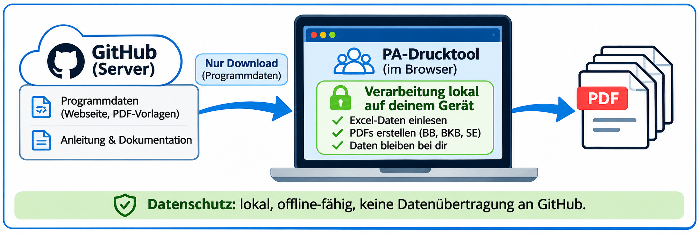

Quellcode einsehen
Die gesamte Web-App liegt offen im Ordner: app.js, pdf-engine.js, config.js, index.html, style.css klassenverbund.js, saxsvs-import.js, access.js, tool-nav.js und excel-anleitung.html.
Die ZIP-Datei enthält sämtliche Quelldateien. Der Quellcode ist ohne Build-Schritt lesbar. Der Quellcode kann direkt hier im Browser eingesehen werden.
Verwendete Bibliotheken
JSZip – zum lokalen Lesen von XLSX und Schreiben der Ausgabe-ZIP (MIT); pdf-lib – zum lokalen Erstellen der PDFs (MIT). Beide Bibliotheken liegen im Ordner js/. Lizenztexte: JSZip und pdf-lib.
Projektlizenz
Der Code ist zur transparenten Einsicht für Kolleginnen und Kollegen verfügbar. Die Bereitstellung ist keine automatische Freigabe zur Weiterverbreitung. Die PDF-Vorlagen liegen derzeit im öffentlichen Repository und sind technisch abrufbar. Die Linkprüfung erfolgt nur clientseitig und schützt weder Vorlagen noch Quellcode vor Abruf. Für echten Zugriffsschutz wäre eine andere Architektur nötig.
Stand
v1.4.7 · 09.11.2026: Klassenverbund mit automatischer Beobachterzuordnung, Einzeldruck, Excel- und SaxSVS-Import, SE-Durchstreichungen, automatische BKB-Schriftverkleinerung bei langen Aufgabenlisten, lokale PDF-/ZIP-Erstellung. Die Quellcode-Dateien werden vom Webserver geladen; Schülerdaten werden im Browser verarbeitet. Hinweise und Grenzen stehen in ARCHITEKTUR.md.